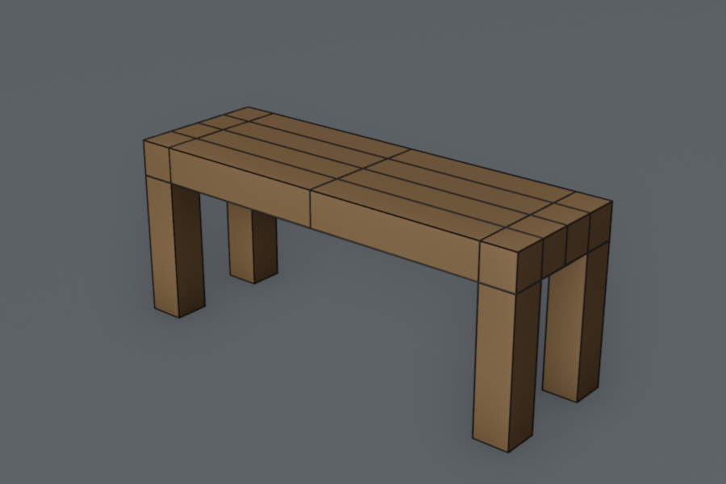
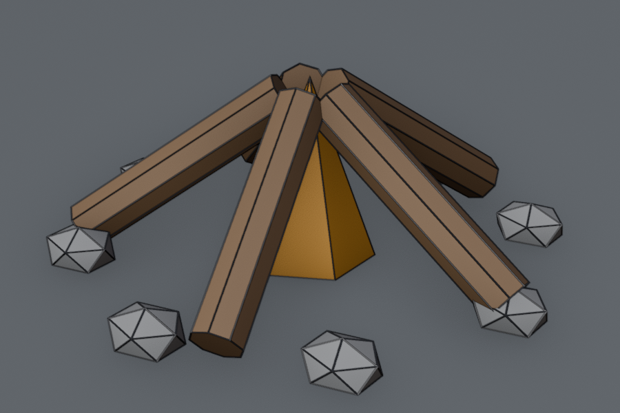
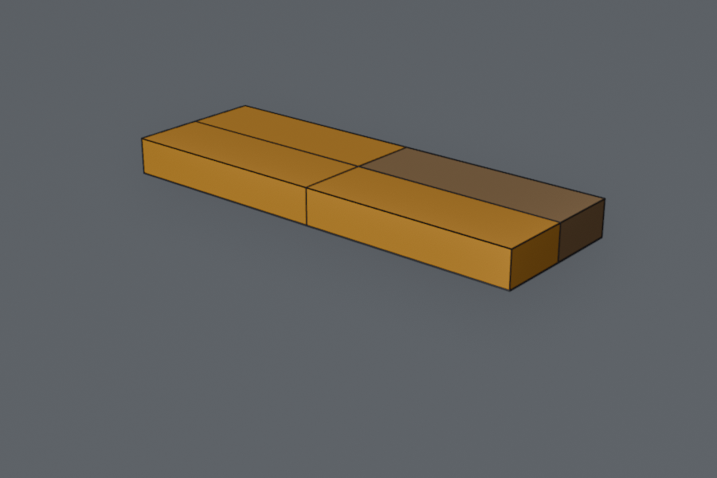
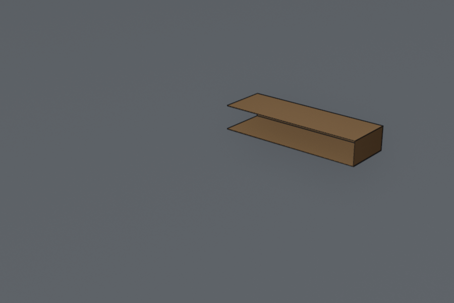
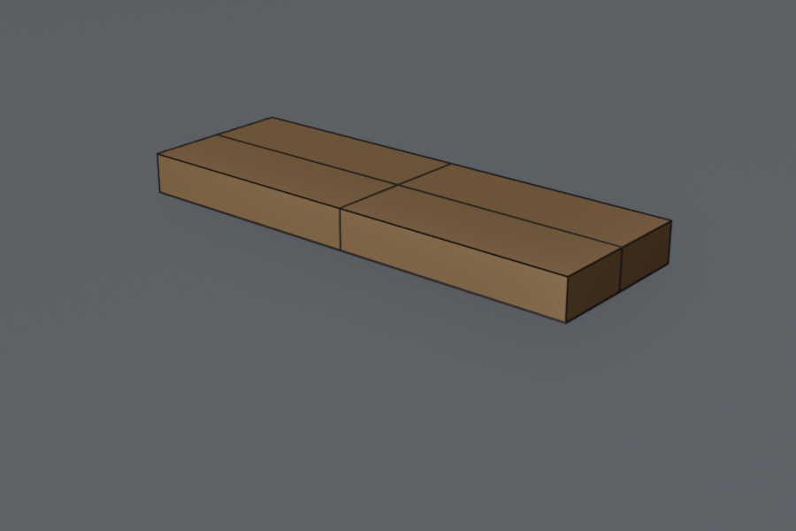
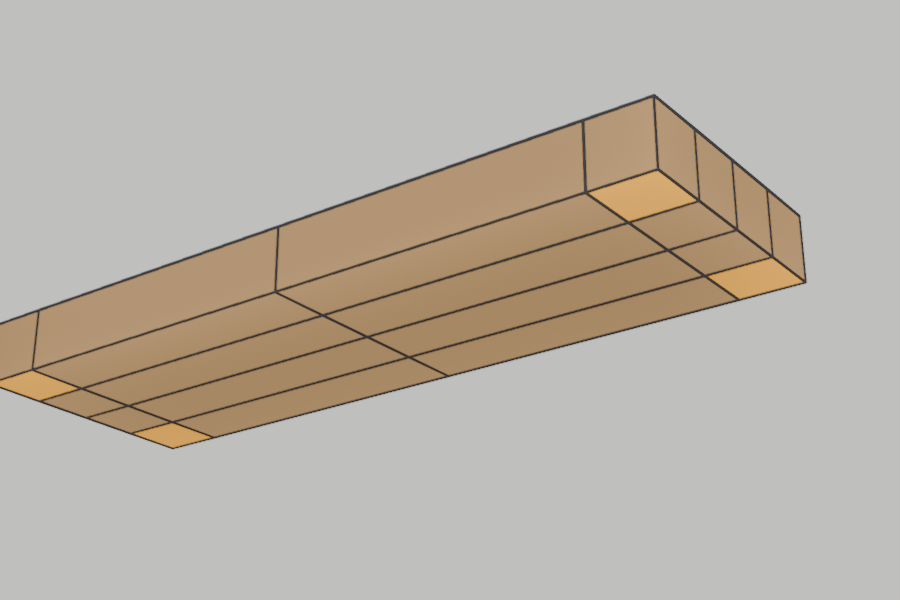
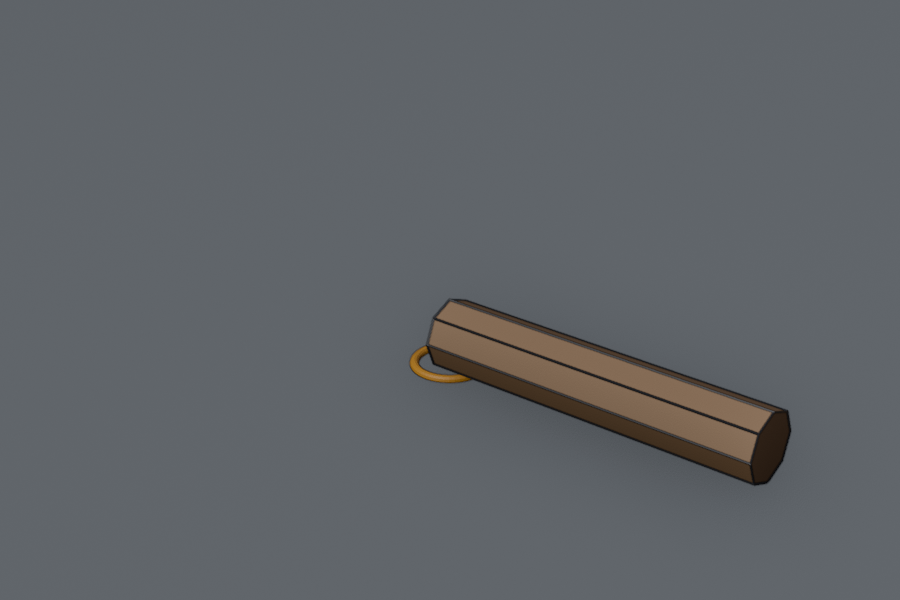
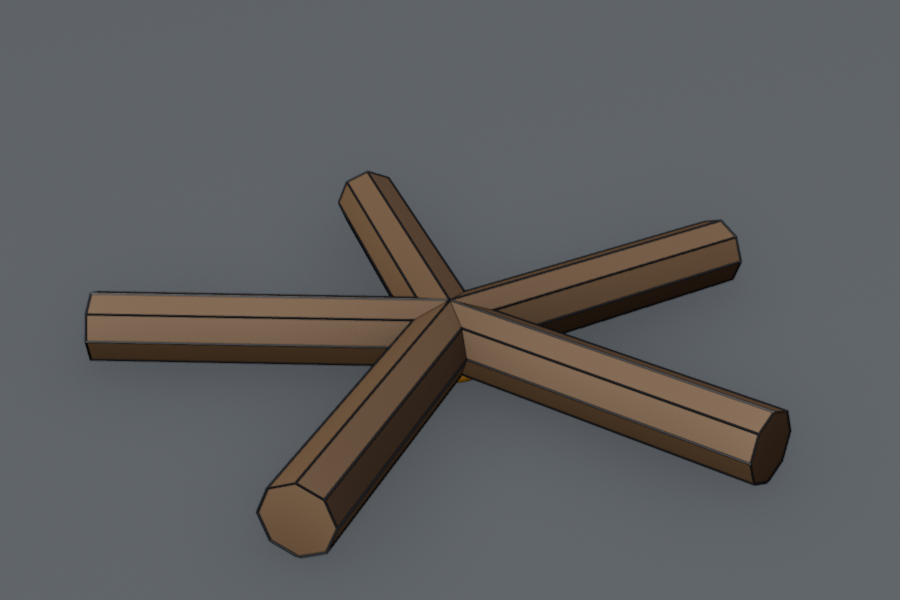
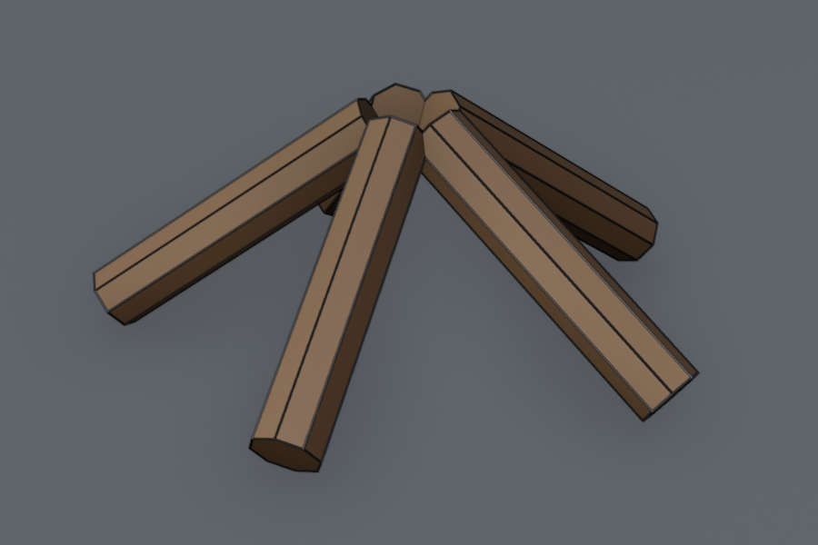
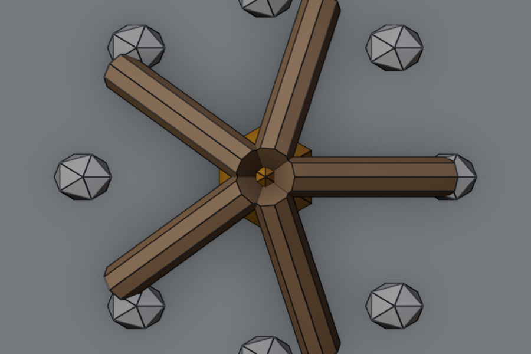

Lesson 11 · Blender track
The Monster, a bench and a campfire
Grant's Parts 5–6, each followed by a short exercise that practises the same skills on something new.




Warm-up: from memory
From Lesson 10: what decides where a Mirror modifier puts the copy?
Show answer
The object's origin: it mirrors “across the Object Origin”.From Lesson 10: you want two materials on one object. What do you need before you can press Assign?
Show answer
Two material slots (add one with +), and in Edit Mode only the faces you want selected.Session 1: Part 5, then the bench
Part 5: Monster's body (14 min)
| Chapter | Watch for |
|---|---|
| 00:20 Collections | Collections are folders in the Outliner. Hiding one hides everything in it. |
| 01:15 3D cursor (Shift+S) | New objects appear at the cursor. Snapping it back to the centre is a habit worth building. |
| 04:38 Torso with Mirror | Model half, see the whole thing. |
| 06:25 Selecting in X-ray | Alt+Z: box select now reaches vertices behind the front ones. You need this in the exercise. |
| 08:29 Mirror Clipping | Key idea. The manual: Clipping “prevents vertices from moving through the mirror plane(s) when you transform them in Edit Mode”. It keeps the two halves stitched together. |
| 09:58 Local axes | An object has its own axes that turn with it. You'll use them in Exercise B. |
| 03:30, 11:25 Challenges | Do both before watching the solutions. |
Exercise A: a bench, built as one quarter
Practises: Mirror on two axes, Clipping, X-ray selection, plus loop cuts and extrude from Lesson 10. Target: 1.2 m long, 0.4 m deep, 0.5 m tall. You model one corner and the mirror makes the other three.








- New file. Select the cube, Tab, A. Shape the seat in Edit Mode: S X
0.6, S Y0.2, S Z0.05, then G Z0.45. You get a 1.2 × 0.4 × 0.1 m seat whose top is at 0.5 m, and the origin is still at the world centre. (It's the same trick as the chest.) - Two centred loop cuts: Ctrl+R over a long edge, then RMB to keep it in the middle. Repeat over a short edge. The top now shows four quarters.
- Top view (Numpad7), X-ray on (Alt+Z), vertex mode (1). Box-select the left half, stopping just short of the middle line. Then hold Shift and box-select the front half (the bottom of the screen in top view), again stopping short of the middle. Compare with the first picture, then X → Vertices.
- Properties editor → Modifiers tab (the wrench) → Add Modifier → Generate → Mirror. Tick axis X and Y, and turn on Clipping. X-ray off.
- Two more loop cuts on your quarter: one about 10 cm from the outer short end, and one about 10 cm from the back edge. Click to place it, sliding by eye; it doesn't have to be exact. This makes a small corner face underneath.
- Orbit underneath. In face mode (3), click that corner face, then E
-0.4Enter extrudes it down to the ground. Save asblender/bench.blend.
Predict: with Clipping on, you select the whole quarter and press G X -0.2. What happens to the vertices on the middle line?
Show answer
They stay stuck on the mirror plane while the rest moves, so the seat gets shorter instead of splitting in two. Without Clipping, the two halves would overlap through each other in the middle. Try it, then Ctrl+Z.I built this exact bench with a script in Blender 5.2.2: it came out at 1.2 × 0.4 × 0.5 m, with four legs from a single extrude.
Session 2: Part 6, then the campfire
Part 6: Monster's arms (12 min)
| Chapter | Watch for |
|---|---|
| 00:48–02:21 Arms, fingers, hand | More building from primitives. By now you know the G/R/S grammar. |
| 02:57 Pivot points | Key idea. The pivot (. key opens its pie menu) “determines the location of the Object Gizmo”, which is the point things rotate and scale around. 3D Cursor and Individual Origins are the two you'll use next. |
| 07:26 Mirroring the arm | Mirror again: which origin is used? |
| 08:00–09:39 Head and eyes | Placing small parts precisely. |
| 11:25 New collection | M: “Moves the selected objects to a different collection.” |
Exercise B: a campfire from one log
Practises: the 3D cursor as a pivot, duplicating (Shift+D), Individual Origins, local axes and collections. A Valheim-style prop for later.








- New file, delete the cube. Shift+S → Cursor to World Origin.
- Add a Cylinder: Vertices 8, Radius 0.06, Depth 0.6. Lay it down with R Y
90, then G X0.3(so its inner end touches the centre) and G Z0.06(resting on the ground). Give it a brownBarkmaterial. - Set the pivot to 3D Cursor (. pie). Shift+D, then RMB to leave the copy in place, then R Z
72Enter. Repeat 3 more times. Why 72? Five logs share 360°. - Select all five logs. Set the pivot to Individual Origins. Then R Y Y
35Enter: pressing Y a second time switches to each log's local axis (“the Local orientation if it was Global previously”). The inner ends should rise; if the outer ends rise instead, Esc and use-35. Finally G Z until the outer ends sit on the ground (about0.17). - Flame: add a Cone (Vertices 6, Radius 0.16, Depth 0.45), G Z
0.225, with an orange material. - Stones (same trick as the logs): an Ico Sphere (Subdivisions 1, Radius 0.08) at G X
0.55, squashed a little with S Z0.7. Pivot back to 3D Cursor, then Shift+D / RMB / R Z45, seven times. - Select everything, M → New Collection, name it
Campfire. Save asblender/campfire.blend.
Predict: in step 4, you forget to switch to Individual Origins, so the pivot is still the 3D Cursor. What does R Y Y 35 do?
Show answer
Every log swings around the centre instead of around its own middle, and the whole star tips and scatters. Pivot point is the question “around what?”, and it changes everything about R and S. If that happens, Ctrl+Z and set the pivot first.Tested with a script in Blender 5.2.2: after the 35° tilt and the 0.17 m lift, every log's inner end sits at 0.40 m and its outer end rests on the ground.
Optional: want the campfire or bench in your game? The pipeline checklist from Lesson 9 still applies. Join the parts first (Ctrl+J) and tick Apply Modifiers for the bench. No pressure: practising in Blender is the point this time.
Recall: after both sessions
What does Mirror Clipping do?
You want to rotate copies of a log around the centre of the fire. Which pivot point?
In R Y Y, what does the second Y do?
Why delete three quarters of the bench instead of keeping the whole seat with a Mirror?
For next session (spaced recall)
- Pivot points: what 3D Cursor and Individual Origins each do, with one use for each.
- Why the bench needed X-ray to select the vertices to delete.
- From Lesson 9: the three habits before exporting a prop.
Next up: Parts 7–8, with exercises in the same style. Animation, including the chest lid, is parked for later until Blender feels comfortable.
Mirror landing in the wrong place, logs flying off when you rotate, or not sure your result matches a picture? Tell me which step and what you see. A screenshot path works too.